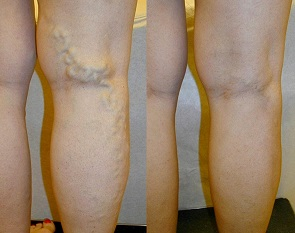

Marina Volkova yra garsioji gimnastė.
Pasaulio čempionė sugebėjo atsikratyti problemų su varikozinių venų išsiplėtimu tik per vieną savaitę. Profesionalus būdas!
Galima išgydyti varikozinių venų išsiplėtimą, net jeigu užsiimate sportu ir net jei jūsų kojos nuolat bus įtampoje, aš žinau iš savo patirties. - Patvirtina Marina Volkova.
Marina Volkova yra garsioji rusė, jauna gimnastė, kuri jau ne vieną kartą buvo pasaulio čempionė pasaulio čempionate All-around. Marina nustatė rekordą, ji yra jauniausia gimnastė, kuri pasaulio čempionate All-around gavo aukso medalį.
- Marina, tai yra tavo rekordas, tu esi pati jauniausia gimnastė, kuri pasaulio čempionate All-around gavo aukso medalį!!! Papasakok mums apie savo darbą.
- Meninė gimnastika yra pati gražiausia moterų sporto rūšis. Be abejo, tai didžiulis darbas, reikia labai daug trenuotis, nes bet kokį judesį atlikti yra neįmanomai sudėtinga. Negaliu leisti sau grįžti namo, jei atlikau visus judesius, kurių atlikimas treneriui nepatiko. Trenuojuosi maždaug po 5-6 valandas per dieną.
- Marina, tu treniesi labai daug. Ar kada nors tu turėjai sveikata problemų, susijusių su tokiomis apkrovomis?
- Žinoma, kiekvienas pratimas įtakoja sveikatą ir kūną. Po pusantro metų treniruočių aš pastebėjau, kad turiu varikozinių venų išsiplėtimą. Mano kojos atrodė žiauriai! Apie tai geriau neprisiminti! Mano venos buvo pripūstos ir mėlynos, jaučiau didelį skausmą!
 Marina užsiima gimnastika nuo vaikystės (nuotrauka: asmeninis archyvas)
Marina užsiima gimnastika nuo vaikystės (nuotrauka: asmeninis archyvas)
 Ir štai ką tai sukėlė už tą laikotarpį, kuriuo esu gimnastikoje (nuotrauka: asmeninis archyvas)
Ir štai ką tai sukėlė už tą laikotarpį, kuriuo esu gimnastikoje (nuotrauka: asmeninis archyvas)
- Galiu įsivaizduoti, kaip tu norėjai atsikratyti šių problemų!
- Taip, aš bandydavau viską, ką tik galėjau! Brangios procedūros ir gydymas užsienyje. Ir, žinoma, pabandžiau liaudies mediciną. Net sutiko padaryti operaciją, bet rezultate negalėjau paskui užsiimti sportu labai ilgai.
- Ir koks buvo rezultatas?
- Iš viso nebuvo jokių rezultatų. Pradžioje neva viskas buvo gerai, esą viskas gavosi, kadangi simptomai, kurie buvo, išnyko, bet greitai visi jie sugrįžo. Kartais net tapdavo blogiau. Deja, aš visiškai nežinojau, ką daryti: negalėjau tąmet treniruotis ir niekaip negalėjau pagerinti situaciją:...
 Su kolega ir treniruočių drauge Jelizaveta Pinčuk.
Su kolega ir treniruočių drauge Jelizaveta Pinčuk.
- O ką pasakysi apie operaciją, kurią tau padarė?
- Noriu pasakyti, tai buvo geriausias metodas iš tų, kuriuos aš bandydavau. Bet tai yra geras metodas tiktai jei nemokamai, o taip atlikti operaciją yra labai brangu paprastiems žmonėms. Ir žinoma, tai reikalauja daug laiko, ilgai negalima trenuotis. Tai labai brangus būdas, skirtas ne visiems. Bet asmeniškai aš negaliu praleisti tiek daug trenuočių ir čemionatų. Taip paprastai baigsies iškart mano sportinė karjera. Vieną kartą pabandžiau, ir gana! Ir šiaip jau, operacija neišsprendžia problemos, tik palengvina ligą tam tikram laikui.
- Na, žiūrint į tavo kojas, galima suprasti, kad tu vis tiek suradai tavo problemos sprendimą...
- Taip, mano kolega ir geriausia draugė, mano konkurentė, kaip ją vadina, Jelizaveta Pinčuk, man padėjo. Vienąkart davė man dėžutę trenuotės metu ir pasakė: „Praeik gydymo kursą šia priemone! Esi mums reikalinga čia, o ne ligoninėje!"
 Rezultatas po operacijos (antra nuotrauka), rezultatas po geliso (trečia nuotrauka).
Rezultatas po operacijos (antra nuotrauka), rezultatas po geliso (trečia nuotrauka).
- Ir buvo pakankamai, kad išgydytum varikozinių venų išsipletimą?!
- Ar galėjai tuo patikėti?! Gelisas, kurį patarė Jelizaveta, iš tikrųjų padėjo!

- Na ir kas ten per būdas? Papasakok mums apie tavo paslaptį!
- Čia jokios paslapties nėra! Tai buvo profesionalus gelisas venoms gydyti , tai Japonijos technologijos produktas, parengtas kartu su Europos mokslininkais. Manoma, kad tai yra saugiausias būdas varikozinėms venoms išgydyti, dėl savo sudėties. Sudėtis yra visiškai natūrali.
- Ar tikrai tu atsikratei visų problemų tiktai panaudojusi gelisą? Kaip jis veikią?
- Tiesą sakant, aš naudojausi tik ! (ride, ndr). Šitas stebuklingas gelisas kovojasi su problema pastoviai, jis stabilizuoja kraujotaką ir nuima venų slėgį. Man padeda labai stipriai po ilgų trenuočių!
Aš nežinau visko apie fiziologiją, bet viskas, kas man svarbu, yra tai, kad šio geliso dėka aš atsikračiau problemų! Bet pageidaujant apie šitą produktą galima sužinoti gamintojo tinklalapyje
- Marina, kiek laiko reikia, kad atsikratytų tokios problemos su venomis? Kiek reikia naudotis , kad pasiektų rezultato?
- Reikia naudotis dukart per dieną: ryte ir vakare prieš einant miegoti.
Tu nepatikėsi, bet aš pamačiau pagerinimus jau po trijų dienų! Pabrinkimai išnyko ir kojos jau atrodė gerai! Jaučiausi labai gerai po trenuočių.
- Tai yra jau po trijų dienų pastebėjai pagerinimus?
- Taip. Dar po dviejų dienų pastebėjau, kad venas jau buvo sunku pamatyti! Dabar galiu ramiai dirbti modele!
- Kiek laiko tau reikėjo išleisti, kad visiškai išgydytum savo kojas?
- Aš neskaičiavau kiek dienų, bet maždaug savaitę. O paskui aš tęsiau naudotis gelisu per 3-4 dienas, nes bijojau, kad rezultatai išnyktų
Bet aš pasiklydau! Kojų venos man nebekėlė nerimo. Aš visiškai apie tai užmiršau ir pradėjau naują gyvenimą! (Šypsosi)
 Marina Volkova
Marina Volkova
- Ar nori kažką palinkėti mūsų skaitytojoms?
- Norėčiau pasakyti, kad tai yra ne koks toks skirtingų medžiagų mišinys, bet medžiagos, esančios šio stebuklingo geliso sudėtyje, gydo visas problemas, susijusias su varikozinių venų išsiplėtimu. Tai, kas yra jo sudėtyje, mokslininkai sukuria naudodami unikalią technologiją ir taip pat fiksuoja juos unikaliai. Todėl saugokitės, yra daug padirbinių! Labai svarbu pirkti gelisą, su kuriuo atliktos visos sertifikacijos: aš perku jį tik gamintojo oficialiame tinklalapyje. Tai efektyvus produktas, turintis garantiją, ir 100% tai nėra padirbinys.
Linkiu jums surasti save ir pergalėti šią žiaurią problemą su varikozinių venų išsiplėtimu! Viskas bus gerai, svarbiausia yra tikėti! Pats gerbiausias apdovanojimas – tai jaustis gerai. Kaip gi gera yra atsibusti su gera nuotaika. Ir svarbiausia tai suprasti, kad jūs patys tai darote, jūs sugebėsite!
Tikiuosi, mano patirtis jums padės ir duos jums jėgų, kad nugalėtumėte ligą! Linkiu visiems sėkmės kovojant prieš varikozinių venų išsiplėtimą!
2020
Komentarai
Sveika, Marina, esi labai gera mergina ir talentinga gimnastė! Tavo istorija motyvavo mane labai smarkiai! Turiu tokias pat problemas su venomis kojose, bet dešininė koja man sukelia nerimą daugiau: nuo viršaus iki kelio skaudžia, o vakaruose darosi visai nekenčiama. Ir vis tiek aš dar neįsirašiau pas gydytoją, noriu pabandyti pati išgydyti. Vėliau parašysiu, papasakosiu, kaip viskas eina
Ačiū, Marina! Vakar gavau tavo siuntą. Viskas gerai. Dabar pradėjau naudotis. Laikiu rezultatų per 5 dienas!
Jūs turite auti avalynę be kulnio, arba su nedideliu kulniu. Tokios problemos su venomis buna dėl aukštų kulnių! Jūs manote tik apie tai, kaip nusipirkti smagią avalynę, o paskui skundžiatės savo žiauriomis kojomis.
Labas, Marina! Užsisakiau gelisą.
labai laukiu, kada gausiu savo siuntą! :)
Mano duktė atvežė mano šitą gelisą iš Japonijos prieš 5 metus, nieko naujo!
Smagu! Aš jau užsisakiau ir pradėjau naudotis. Po kelių dienų papasakosiu apie savo sėkmes.
Produktas ne naujas, visis žino apie šitą gelisą. Prieš 2 metus mano mama išsprendė savo problemas su venomis jo dėka
JAV naudojamės jau 5 metus šiuo gelisu! Merginos darbe visos panašios į žvaigždes iš Hollywoodo!
Laba diena... Naudojuosi gelisu jau 3 dienas ir net nežinau kaip išreikšti savo padėką! Dėkui Marina!!! Mano kojos kaip naujos!
Praėjo tik 4 dienos ir jau matau rezultatą! Dabar mano kojos atrodo gražiau! Esu labai laiminga!
Nusipirkau gelisą ir labai džiausiuosi! Praėjo tiktai savaitė ir viskas tapo iš karto daug geriau. Žinoma, aš tokio greito rezultato nelaukiau… atsižvelgiant į jo kainą, tai yra paprastai dovana.
Marina, aš žinojau apie šitą gelisą, nes pirkau jį Kinijoje labai senai. Problemai su venomis paprastai išnyko, smagu, jo? Patariu! Visiem!
Mano vyrui labai patinka! Sako, kad mano reikia dalyvauti konkurse “Miss gražiausios kojos”, haha
tikrai veikia, užsisakiau oficialioje svetainėje be išankstinio mokėjimo, ir siuntinys atėjo per 6 dienas. Venos paprastai išnyko po savaitės vartojimo.
Aš ne vienintelė! Atsikračiau problemų su kojomis tik per savaitę. Kažkaip vis tiek negaliu tuo patikėti :-D
Kojos dabar nebeskauda ir atrodo labai gražiai!! Super! Patariu visoms merginoms!
aš taip pat žinau . Mano teta nebesiskundžia dėl to, kad kojos skaudžia (-;
Labas! Šis gelisas yra paprastai geriausias, aš laukiau tik savaitę, kad atsikratyčiau ligos.
Paprastai bomba! Mano kojos dabar sveikos ir gražios! Beje, siuntą gavau po trijų dienų.
Labas rytas, damos! Mano žmona pirko šį gelisą ir dabar jos kojos paprastai idealios! Negaliu aprašyti žodžiais, koks esu laimingas! Patariu!
nieko naujo! Kiekviena moteris žino apie šį gelisą: jeigu kas nors nežino, vadinasi, paprastai jai nesinori atsikratyti ligos.
Ačiū už straipsnį. Marina, esi geriausia! Tikiuiosi, tavo karjera bus sėkminga! Einu užsisakyti gelisą.
Tai būtent ko aš norėjau! Visos merginos pavydės!
Kinijoje visi naudojati šiuo gelisu ir veikia labai gerai! Kaip visuomet, mes paskutinės sužinome apie viską, laukiame šimtmetį, kad gautume produktą...